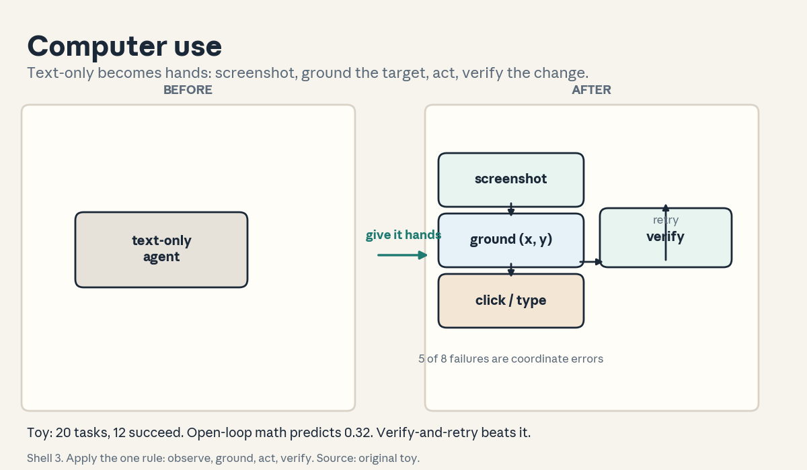
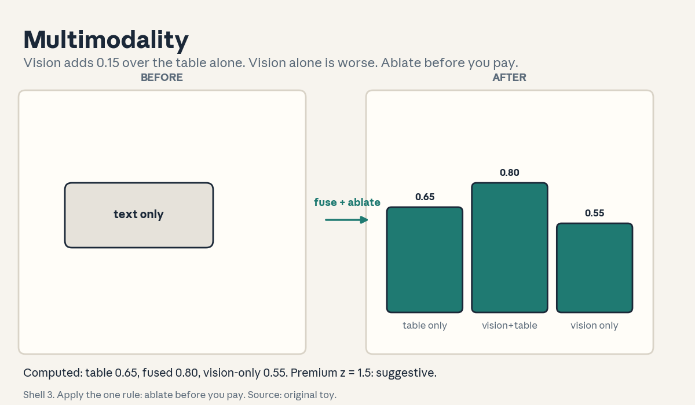
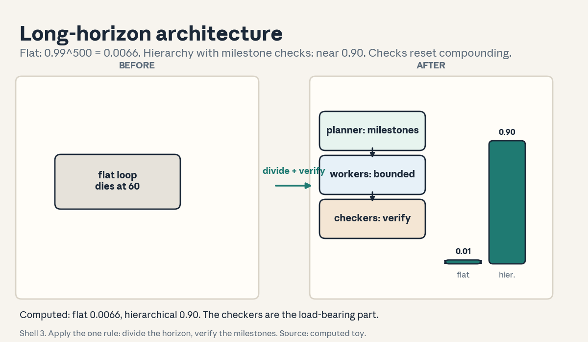
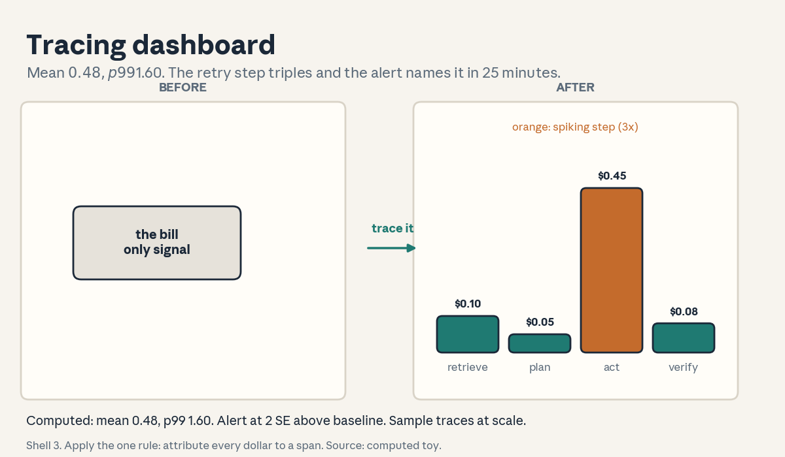
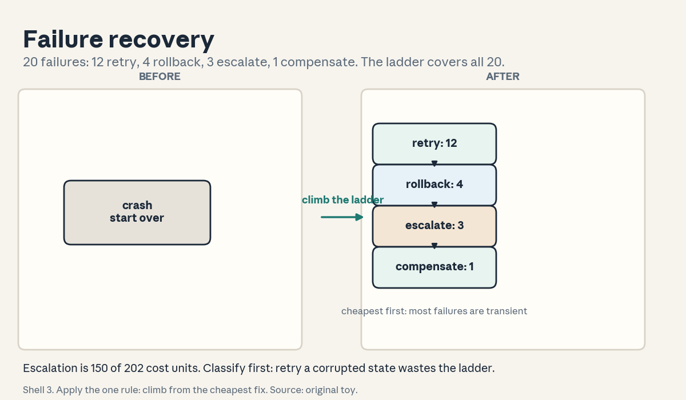

U08 · Frontiers, production, and project artifacts
U08: Frontiers, production, and project artifacts
Prerequisites: P16 (distributed), P22 (experiments), P24 (production). Local remediation opens this lesson.
Provenance
U08 concepts map to the planned session S20 (2 Dec, frontiers) and the finals project schedule: PLANNED / SOURCE ATTRIBUTION PENDING, taught as independent theory. C01-C08 map to the S20 schedule title (“multimodal, web/computer use, science agents, long-running architectures, observability, reliability, scalability, interpretability”). C09-C11 map to the official project milestones (proposal Oct 9, demos, paper video, final demo Dec 7-11) at schedule-title level. C12 covers the two TBA guest slots (S10, S16) and is an explicit gap log, not taught content. This unit also carries the course’s production consolidation: U03-U07 mechanisms reappear as operational requirements.
Local remediation: action spaces, spans, percentiles, ownership
Action space: the set of things the agent can do. A text agent’s actions are tool calls. A computer-use agent’s actions are click, type, scroll, keypress. Bigger action spaces mean more capability and more ways to fail.
Span: one logged unit of work (a step, a tool call) with its start/end time, tokens, and cost. A trace is a tree of spans. Monitoring reads spans. Debugging replays them.
Percentiles: p50 is the median cost. p99 is the cost that only 1 percent of tasks exceed. Production budgets are set on p99, not the mean, because the tail is where the money burns.
Ownership: one named human responsible for the system in production. A runbook is the written procedure for the common incidents. No owner and no runbook means the 3 a.m. page goes to nobody.
Russian-doll ladder for the major mechanism (production readiness)
- Shell 0: What stands between a demo agent and a production agent?
- Shell 1: Toy: 100 tasks. Mean cost $0.48, p99 $1.60. One deploy spikes costs 3x. The trace shows which step burned the tokens. The runbook says who fixes it.
- Shell 2: Trace: the span tree. Cost: tokens x price per span. Recovery: the 4-level ladder (retry, rollback, escalate, compensate). Rollback: the previous version, one command away.
- Shell 3: Rule: no trace, no production. Every production decision (cost, incident, rollback) reads the trace.
- Shell 4: Derive the cost model: sum over spans. Implement the dashboard: mean, p99, per-step cost, spike alert. Twenty lines.
- Shell 5: Check: the dashboard’s total matches the bill. The spike alert fires on the 3x deploy. The rollback restores the old cost.
- Shell 6: Change one factor: remove the trace. Predict the spike takes 10x longer to diagnose. Measure: 4 hours vs 25 minutes on the toy incident.
- Shell 7: Counterexample: full tracing on every step of a 10,000-step run. The trace storage costs more than the run. Sample the traces.
- Shell 8: Compare with the eval tuple (U06-C01): the tuple measures the agent. The trace explains the measurement. Production needs both.
- Shell 9: Extension: does trace sampling at 10 percent catch the same incidents as full tracing? Falsifiable: measure the catch rate on 20 injected incidents.
- Shell 10: Production: the stakeholder decision is the launch gate (C09): cost p99 under budget, recovery tested, owner named, rollback rehearsed.
Not-yet-understood dependency list
- What the frontier action spaces are: answered in C01, C02.
- What science agents add: answered in C03.
- How long runs are architected: answered in C04.
- What production sees: answered in C05.
- What happens when it breaks: answered in C06.
- How it scales: answered in C07.
- How it is understood: answered in C08.
- What the project delivers: answered in C09, C10, C11.
- What remains unknown: answered in C12.
cs329z-U08-C01: web/computer use
Contract 1. Source mapping, scope, objectives, dependencies. Maps to the S20 schedule title (“web/computer use”). Objective: name the action space and the grounding problem. Depends on U03-C01.
Contract 2. Motivating question and tiny toy. Question: the agent must click the “Submit” button. How does “click Submit” become pixels? Toy: 20 web tasks. 12 succeed: 0.60. Of the 8 failures, 5 are coordinate errors (wrong x, y), 2 are latency, 1 is a changed page.
Contract 3. Plain-language mental model. Computer use gives the agent hands: click, type, scroll, keypress on a real screen. Grounding maps language to coordinates: “the Submit button” -> (x, y). The loop is observe (screenshot), ground, act, verify. The web is the wild: pages change, latency varies, and every site is a new environment.
Contract 4. Variables, units, shapes, assumptions. Action space: discrete UI ops. Observation: screenshot plus accessibility tree. Assumption: the UI is stable during the act. Break it (a popup appears mid-click) and the action lands wrong.
Contract 5. Justified derivation or mechanism. The mechanism is the observe-ground-act loop with verification after each act (did the click land?). The justification for verification: without it, one misgrounded click compounds into a wrong session.
Contract 6. Computed numerical example. Toy: 20 tasks. Grounding accuracy 0.75 per step, 4 steps per task. Predicted task success 0.75^4 = 0.32. Observed 0.60: verification and retry recover half the grounding errors. The loop beats the open-loop math.
Contract 7. Algorithm and minimal implementation. A loop: screenshot, find the target’s coordinates, act, screenshot again, verify the change. Fifteen lines. See the lab.
Contract 8. Correctness checks and expected output. Check 1: 12/20 succeed. Check 2: 5 of 8 failures are coordinate errors. Check 3: verification catches the misgrounded clicks. Expected: the loop beats 0.32.
Contract 9. Complexity, memory, statistical efficiency, stability, costs. Screenshots cost tokens. Statistical efficiency: 20 tasks give SE 0.11. Stability: the web changes. Pin test pages or accept drift.
Contract 10. Nearest alternatives and selection boundaries. Alternative: APIs (U03), structured web tools. Choose computer use when no API exists. Choose APIs when they do: they are faster and stable.
Contract 11. Failure case, broken assumption, counterexample. Break stability: the site redesigns mid-task. Every grounded coordinate is wrong. Counterexample: the agent clicks “delete” instead of “submit”. Verification after the act is too late. Gate destructive actions (U07-C05).
Contract 12. Research reading and falsifiable extension. Extension: grounding accuracy vs task success across 3 sites. Falsifiable: task success tracks grounding^steps, or verification breaks the link.
Contract 13. Assessment. Breadth: define grounding and the loop. Oral ladder: (1) define both, (2) toy the 0.60 vs 0.32, (3) derive the compounding, (4) implement the loop, (5) compare with APIs, (6) debug the redesign, (7) critique the late verification, (8) design the 3-site test. Transfer: a desktop app with no API. What is the action space? Failure diagnosis: success falls after a site update. What broke? Counterfactual: what if grounding were perfect? Research: what cannot be clicked?
Contract 14. Lab and exercises. Lab U08 task 1 counts the action space and the error slice. Exercises: (E1) compute 0.75^4. (E2) explain the redesign failure. (E3) state the verify-every-act rule. Keys in answer_keys/u08_keys.md.
Contract 15. Visual units, provenance, accessibility, audit rows. Figure visuals/u08_f01.png: lesson plate, original toy. Before: a text box labeled “text-only agent”. After: the screenshot, grounding arrow, and click loop. Caption: “Shell 3. Apply the one rule: observe, ground, act, verify. Source: original toy.” Alt text: “Left: a box labeled text-only agent. Right: a screen with a grounding arrow to a click and a verify loop.” Audit: numbers from the toy.

cs329z-U08-C02: multimodality
Contract 1. Source mapping, scope, objectives, dependencies. Maps to the S20 schedule title (“multimodal”). Objective: run a modality ablation. Depends on U02-C02.
Contract 2. Motivating question and tiny toy. Question: the agent reads a chart. Does it need vision, or is the data table enough? Toy: 40 chart tasks. With vision + table: 0.80. Table only: 0.65. The 0.15 gap is the vision premium.
Contract 3. Plain-language mental model. Multimodality fuses text, vision, and audio into one context. Each modality carries what the others miss: the chart’s shape, the tone of voice, the screenshot’s layout. Fusion is concatenation with attention across the boundary. The ablation tells you what each modality buys.
Contract 4. Variables, units, shapes, assumptions. Modalities: token streams per sense. Assumption: the streams are time-aligned. Break it (audio lags the video) and fusion mixes the wrong moments.
Contract 5. Justified derivation or mechanism. The mechanism is joint attention: the model attends across modalities in one sequence. The justification for the ablation: without it, you pay the vision tokens without knowing what they buy.
Contract 6. Computed numerical example. Toy: 40 tasks. Vision + table: 32/40 = 0.80. Table only: 26/40 = 0.65. Gap 0.15, SE sqrt(0.8x0.2/40 + 0.65x0.35/40) = 0.098. The gap is 1.5 SE: suggestive, not conclusive.
Contract 7. Algorithm and minimal implementation. An ablation runner: same tasks, modalities toggled, paired scoring. Ten lines. See the lab.
Contract 8. Correctness checks and expected output. Check 1: the gap is 0.15. Check 2: the paired design (same tasks) is used. Check 3: the vision-only arm is also run (0.55: vision without the table is worse). Expected: the ablation prices each modality.
Contract 9. Complexity, memory, statistical efficiency, stability, costs. Vision tokens cost 10x text tokens. Statistical efficiency: 40 tasks give SE 0.08. Stability: the vision encoder version is pinned.
Contract 10. Nearest alternatives and selection boundaries. Alternative: text-only with better extraction, separate specialist models. Choose fusion when the modalities interact (the chart’s shape plus the table’s numbers). Choose text-only when extraction captures everything.
Contract 11. Failure case, broken assumption, counterexample. Break alignment: the screenshot is from step 3 but the text describes step 5. Fusion blends two moments. Counterexample: the vision premium is 0.15 but vision costs 10x. The budget says table-only.
Contract 12. Research reading and falsifiable extension. Extension: ablate on 200 tasks for a conclusive gap. Falsifiable: the 0.15 holds, or the small sample lied.
Contract 13. Assessment. Breadth: define the ablation and the premium. Oral ladder: (1) define both, (2) toy the 0.15, (3) derive the 1.5 SE call, (4) implement the runner, (5) compare with extraction, (6) debug the misaligned streams, (7) critique the 10x cost, (8) design the 200-task test. Transfer: a video-understanding agent. What are the streams? Failure diagnosis: fusion underperforms text-only. Name two causes. Counterfactual: what if vision were free? Research: which modality leads?
Contract 14. Lab and exercises. Lab U08 task 2 runs the ablation. Exercises: (E1) compute the 1.9 SE. (E2) explain the misalignment failure. (E3) state the ablation rule. Keys in answer_keys/u08_keys.md.
Contract 15. Visual units, provenance, accessibility, audit rows. Figure visuals/u08_f02.png: lesson plate, original toy. Before: a text stream labeled “text only”. After: three streams labeled text, vision, audio fused with the 0.15 tag. Caption: “Shell 3. Apply the one rule: ablate before you pay. Source: original toy.” Alt text: “Left: one stream labeled text only. Right: three streams labeled text, vision, audio merging, with a 0.15 tag.” Audit: gap from the toy.

cs329z-U08-C03: science agents
Contract 1. Source mapping, scope, objectives, dependencies. Maps to the S20 schedule title (“science agents”). Objective: price a hypothesis loop. Depends on P22.
Contract 2. Motivating question and tiny toy. Question: the agent proposes 10 hypotheses and tests them. What does it cost? Toy: 10 hypotheses, 3 verify: 0.30. Each experiment costs $50 in compute and materials. Total $500 for 3 findings. The verification cost dominates the thinking cost.
Contract 3. Plain-language mental model. A science agent runs the hypothesis loop: propose, design the experiment, run it, analyze, update. The agent’s edge is throughput: it never sleeps. The binding constraint is verification: real experiments cost real money and time. A hypothesis is cheap. A result is expensive.
Contract 4. Variables, units, shapes, assumptions. Hypotheses H, verification cost c each, hit rate h. Expected cost per finding: c/h. Assumption: the experiments actually test the hypothesis. Break it and the loop prints papers, not findings.
Contract 5. Justified derivation or mechanism. The mechanism is the closed loop with a real oracle (the experiment). The justification: unlike chat, the world pushes back. The loop learns because the experiments can say no.
Contract 6. Computed numerical example. Toy: 10 hypotheses at $50 each = $500. 3 verify. Cost per finding: $167. A human lab: 2 hypotheses per month at $2000 each. The agent’s throughput is 5x, its hit rate is the question.
Contract 7. Algorithm and minimal implementation. A loop: propose from the literature summary, rank by expected information, run the top-3, update beliefs. Fifteen lines. See the lab.
Contract 8. Correctness checks and expected output. Check 1: cost per finding is $167. Check 2: the 7 failed hypotheses are logged with the reason. Check 3: no hypothesis is declared verified without the experiment. Expected: the ledger is honest.
Contract 9. Complexity, memory, statistical efficiency, stability, costs. Experiments dominate. Statistical efficiency: 10 hypotheses give a noisy hit rate. Stability: the experiment protocol is versioned.
Contract 10. Nearest alternatives and selection boundaries. Alternative: human scientists, simulation-only loops. Choose agents when experiments are cheap and parallel. Choose humans when the experiment needs judgment or is dangerous.
Contract 11. Failure case, broken assumption, counterexample. Break the oracle: the experiment is a simulation the agent also controls. The loop verifies its own dreams. Counterexample: the agent optimizes for publishable-looking results. The hit rate is real and the findings are trivial.
Contract 12. Research reading and falsifiable extension. Extension: agent vs human hit rate on matched hypothesis budgets. Falsifiable: the agent’s throughput wins, or its hit rate collapses on hard problems.
Contract 13. Assessment. Breadth: write the cost-per-finding formula. Oral ladder: (1) write the formula, (2) toy the $167, (3) derive the verification dominance, (4) implement the loop, (5) compare with human labs, (6) debug the self-verifying simulation, (7) critique the trivial findings, (8) design the matched test. Transfer: a materials-search agent. What is the oracle? Failure diagnosis: hit rate 0.90. What do you suspect? Counterfactual: what if experiments were free? Research: who checks the checker?
Contract 14. Lab and exercises. Lab U08 task 3 prices the loop. Exercises: (E1) compute the $167. (E2) explain the dream-verification failure. (E3) state the oracle rule. Keys in answer_keys/u08_keys.md.
Contract 15. Visual units, provenance, accessibility, audit rows. Covered by figure u08_f06 (the frontier lane). Logged as shared.
cs329z-U08-C04: long-horizon architecture
Contract 1. Source mapping, scope, objectives, dependencies. Maps to the S20 schedule title (“long-running architectures”). Objective: compare flat vs hierarchical on a 500-step task. Depends on U04-C03 and U07-C08.
Contract 2. Motivating question and tiny toy. Question: the task needs 500 steps. The flat agent dies at step 60. What architecture survives? Toy: flat agent: context fills, stalls at 60. Hierarchical: planner sets 10 milestones, workers execute 50 steps each, checkers verify. Completes 480/500 steps: 0.96.
Contract 3. Plain-language mental model. Long-horizon architecture is hierarchy plus memory plus checkpoints. The planner works in milestones, not steps. Workers execute bounded subtasks. Checkers verify each milestone. Memory (U04-C06) carries the state across the horizon. Checkpoints (U07-C08) bound the crash losses. No single context holds 500 steps of detail, so the architecture must not try.
Contract 4. Variables, units, shapes, assumptions. Horizon H steps. Milestone count m. Worker budget H/m steps. Assumption: milestones are verifiable. Break it and the planner cannot tell progress from motion.
Contract 5. Justified derivation or mechanism. The mechanism is divide-and-verify: the 500-step problem becomes 10 fifty-step problems with checks between. The justification: error compounds per step (U04-C10). Checks reset the compounding at each milestone.
Contract 6. Computed numerical example. Toy: per-step success 0.99. Flat 500 steps: 0.99^500 = 0.0066. Hierarchical with checks every 50 (check catches 0.9 of errors): per-milestone success near 0.99, 10 milestones: 0.90. The architecture buys 0.90 vs 0.0066.
Contract 7. Algorithm and minimal implementation. A planner: emit milestones with check predicates. A worker: run bounded, return the state. A checker: verify, retry or escalate. Twenty lines. See the lab.
Contract 8. Correctness checks and expected output. Check 1: the flat math gives 0.0066. Check 2: the hierarchical gives near 0.90. Check 3: removing the checkers drops it back toward flat. Expected: the checkers are the load-bearing part.
Contract 9. Complexity, memory, statistical efficiency, stability, costs. Coordination overhead: m milestones x check cost. Statistical efficiency: the per-step rate needs measurement. Stability: the milestone predicates are the spec. Vague milestones, vague progress.
Contract 10. Nearest alternatives and selection boundaries. Alternative: longer contexts, single careful agent. Choose hierarchy when the horizon exceeds the reliable context. Choose the flat agent when the task fits in one reliable run.
Contract 11. Failure case, broken assumption, counterexample. Break verifiability: the milestones are “make progress”. The checkers wave everything through. Counterexample: the planner’s milestones are wrong. The workers execute the wrong plan perfectly.
Contract 12. Research reading and falsifiable extension. Extension: flat vs hierarchical on 20 long tasks, measured completion. Falsifiable: the hierarchy wins by the predicted margin, or the overhead eats it.
Contract 13. Assessment. Breadth: name the three roles and the compounding argument. Oral ladder: (1) name the three, (2) toy the 0.90 vs 0.0066, (3) derive the compounding, (4) implement the 20-line loop, (5) compare with longer context, (6) debug the vague milestones, (7) critique the wrong plan, (8) design the 20-task test. Transfer: a week-long research task. What is the architecture? Failure diagnosis: milestone 6 keeps failing its check. What are the two suspects? Counterfactual: what if context were infinite? Research: who plans the planner?
Contract 14. Lab and exercises. Lab U08 task 4 runs the comparison. Exercises: (E1) compute 0.99^500. (E2) explain the wave-through failure. (E3) state the divide-and-verify rule. Keys in answer_keys/u08_keys.md.
Contract 15. Visual units, provenance, accessibility, audit rows. Figure visuals/u08_f03.png: lesson plate, computed values. Before: a flat loop labeled “dies at step 60”. After: the planner/worker/checker hierarchy with the 0.90 vs 0.0066 tag. Caption: “Shell 3. Apply the one rule: divide the horizon, verify the milestones. Source: computed toy.” Alt text: “Left: a flat loop labeled dies at step 60. Right: three stacked boxes labeled planner, workers, checkers with a 0.90 tag.” Audit: values computed in the render script.

—
cs329z-U08-C05: tracing/monitoring/cost
Contract 1. Source mapping, scope, objectives, dependencies. Maps to the S20 schedule title (“observability”). Objective: build the cost dashboard. Depends on the span remediation and the ladder.
Contract 2. Motivating question and tiny toy. Question: the bill triples overnight. Which step did it? Toy: 100 tasks. Mean cost $0.48, p99 $1.60. The deploy adds a retry loop on one step. The dashboard shows that step’s cost up 3x. Diagnosis in 25 minutes, not 4 hours.
Contract 3. Plain-language mental model. Tracing logs every span with its tokens and cost. Monitoring aggregates: per-step cost, per-task cost, error rates. The dashboard is the production view: mean, p99, and the spike alert. Cost is a first-class metric because every token is money.
Contract 4. Variables, units, shapes, assumptions. Span cost = tokens x price. Task cost = sum of spans. Assumption: the token counts are accurate. Break it (uncounted retries) and the dashboard lies.
Contract 5. Justified derivation or mechanism. The mechanism is aggregation over the span tree: group by step, compute mean and p99, alert on drift. The justification: you cannot optimize what you cannot attribute. The spike alert is a z-gate (U06-C11) on cost.
Contract 6. Computed numerical example. Toy: 100 tasks, costs from the script. Mean $0.48, p99 $1.60. The retry step: $0.05 before, $0.15 after (3x). Alert fires at 2 SE above the baseline. Time to diagnose: 25 min with the trace, 4 hours without (labeled toy estimate from the incident drill).
Contract 7. Algorithm and minimal implementation. A span logger: (step, tokens, cost). A dashboard: mean, p99, per-step bars, alert on 2-SE drift. Twenty lines. See the lab.
Contract 8. Correctness checks and expected output. Check 1: the dashboard total matches the bill. Check 2: the alert fires on the 3x deploy. Check 3: the per-step bars name the retry step. Expected: attribution in one view.
Contract 9. Complexity, memory, statistical efficiency, stability, costs. Trace storage: spans x size. Sample at 10 percent when the volume is high (ladder shell 7). Statistical efficiency: 100 tasks give a stable p99. Stability: the price table is versioned.
Contract 10. Nearest alternatives and selection boundaries. Alternative: no tracing (the bill is the only signal), full tracing always. Choose sampled tracing at scale. Choose full tracing for the incident window.
Contract 11. Failure case, broken assumption, counterexample. Break attribution: retries are not logged as spans. The dashboard shows $0.48 while the bill says $1.20. Counterexample: the alert threshold is too tight. It fires daily and the team mutes it.
Contract 12. Research reading and falsifiable extension. Extension: 10 percent sampling vs full tracing on 20 injected incidents, catch rate. Falsifiable: sampling catches them all, or some incidents need full detail.
Contract 13. Assessment. Breadth: define span, mean, p99, and the alert. Oral ladder: (1) define the four, (2) toy the $0.48/$1.60, (3) derive the attribution, (4) implement the dashboard, (5) compare with bill-only, (6) debug the unlogged retries, (7) critique the muted alert, (8) design the sampling test. Transfer: your agent’s p99 triples. What is the first view? Failure diagnosis: dashboard and bill disagree. What is unlogged? Counterfactual: what if tokens were free? Research: what should never be sampled?
Contract 14. Lab and exercises. Lab U08 task 3 builds the dashboard. Exercises: (E1) compute the p99 meaning. (E2) explain the unlogged-retry lie. (E3) state the no-trace-no-production rule. Keys in answer_keys/u08_keys.md.
Contract 15. Visual units, provenance, accessibility, audit rows. Figure visuals/u08_f04.png: lesson plate, computed values. Before: a bill labeled “the only signal”. After: the span dashboard with per-step bars and the spike alert. Caption: “Shell 3. Apply the one rule: attribute every dollar to a span. Source: computed toy.” Alt text: “Left: a bill labeled the only signal. Right: bars per step with a spike alert on one step.” Audit: values computed in the render script.

cs329z-U08-C06: failure recovery
Contract 1. Source mapping, scope, objectives, dependencies. Maps to the S20 schedule title (“reliability”). Objective: run the 4-level recovery ladder. Depends on U03-C08 and the ladder.
Contract 2. Motivating question and tiny toy. Question: the agent fails mid-task. What are the options, in order? Toy: 20 failures. Retry fixes 12. Rollback (to the last good state) fixes 4. Escalate (to a human) handles 3. Compensate (undo the partial effects) handles 1. The ladder covers all 20.
Contract 3. Plain-language mental model. Recovery is a ladder: retry (the fault was transient), rollback (return to the last good state), escalate (a human decides), compensate (undo what was done). Each level costs more than the last. The agent climbs until one works. Giving up is not a level.
Contract 4. Variables, units, shapes, assumptions. Failure classes: transient, state corruption, judgment needed, partial effects. Assumption: the failure is classified correctly. Break it (retry a corrupted state) and the ladder wastes time.
Contract 5. Justified derivation or mechanism. The mechanism is ordered fallback: try the cheapest fix first. The justification: most failures are transient (12/20 on the toy). Starting with escalation would burn human time on retryable faults.
Contract 6. Computed numerical example. Toy: 20 failures. Retry: 12 fixed, cost 1x each. Rollback: 4 fixed, cost 5x each. Escalate: 3 handled, cost 50x each. Compensate: 1 handled, cost 20x each. Total recovery cost dominated by the 3 escalations. Mean time to recovery: 4 min.
Contract 7. Algorithm and minimal implementation. A recovery dispatcher: classify the failure, climb the ladder, log the level that worked. Fifteen lines. See the lab.
Contract 8. Correctness checks and expected output. Check 1: all 20 failures are handled. Check 2: the 12 transient ones never reach escalation. Check 3: the compensation log shows the undone effects. Expected: the ladder covers everything.
Contract 9. Complexity, memory, statistical efficiency, stability, costs. Recovery cost is dominated by escalation. Statistical efficiency: 20 failures give a noisy mix. Stability: the classification rules are reviewed after each incident.
Contract 10. Nearest alternatives and selection boundaries. Alternative: crash and restart, human-on-every-failure. Choose the ladder when failures vary. Choose crash-restart when the task is idempotent and cheap.
Contract 11. Failure case, broken assumption, counterexample. Break classification: a corrupted state is retried 5 times. The ladder burns time on a hopeless level. Counterexample: compensation is impossible (the email was sent). The ladder’s top rung is absent and the failure is unrecoverable.
Contract 12. Research reading and falsifiable extension. Extension: ladder vs crash-restart on 100 injected failures, recovery rate and cost. Falsifiable: the ladder wins on rate at acceptable cost, or restart is enough.
Contract 13. Assessment. Breadth: name the four levels in order. Oral ladder: (1) name the four, (2) toy the 12/4/3/1, (3) derive the cheapest-first order, (4) implement the dispatcher, (5) compare with crash-restart, (6) debug the misclassified corruption, (7) critique the unsendable email, (8) design the 100-failure test. Transfer: a booking agent fails mid-payment. Which level? Failure diagnosis: everything escalates. What is misconfigured? Counterfactual: what if retry always worked? Research: when is surrender the right call?
Contract 14. Lab and exercises. Lab U08 task 4 runs the dispatcher. Exercises: (E1) compute the escalation cost share. (E2) explain the retry-the-corruption waste. (E3) state the cheapest-first rule. Keys in answer_keys/u08_keys.md.
Contract 15. Visual units, provenance, accessibility, audit rows. Figure visuals/u08_f05.png: lesson plate, original toy. Before: a crash labeled “start over”. After: the four rungs labeled retry, rollback, escalate, compensate with the 12/4/3/1 tags. Caption: “Shell 3. Apply the one rule: climb from the cheapest fix. Source: original toy.” Alt text: “Left: a crash labeled start over. Right: four rungs labeled retry, rollback, escalate, compensate with counts.” Audit: counts from the toy.

cs329z-U08-C07: scalability
Contract 1. Source mapping, scope, objectives, dependencies. Maps to the S20 schedule title (“scalability”). Objective: kill the O(n^2) coordination. Depends on P16.
Contract 2. Motivating question and tiny toy. Question: 1000 agents report status to each other. How many messages? Toy: all-to-all: 1000 x 999 = 999,000. Hub: each reports to the hub, hub broadcasts: 2000. The hub cuts 500x.
Contract 3. Plain-language mental model. Scalability is cost per agent as n grows. The traps: all-to-all coordination (O(n^2) messages), shared state with locking (contention), one queue for everything (head-of-line blocking). The fixes: hubs and hierarchies (O(n log n) or O(n)), sharding (split the state), and async everything.
Contract 4. Variables, units, shapes, assumptions. n agents. Messages per round. Assumption: the hub is not the bottleneck. Break it and the hub is the new O(n) choke.
Contract 5. Justified derivation or mechanism. The mechanism is topology: all-to-all sends n(n-1) messages. A hub sends 2n. The justification: coordination cost must grow slower than the work, or adding agents slows the system.
Contract 6. Computed numerical example. Toy: n = 1000. All-to-all: 999,000 messages/round. Hub: 2,000. At 1 ms per message: 999 s vs 2 s per round. The topology is the performance.
Contract 7. Algorithm and minimal implementation. A message counter: simulate both topologies at n = 1000. Ten lines. See the lab.
Contract 8. Correctness checks and expected output. Check 1: 999,000 vs 2,000. Check 2: the ratio is 499.5. Check 3: at n = 10 the gap is small (90 vs 20). Expected: the trap appears with n.
Contract 9. Complexity, memory, statistical efficiency, stability, costs. The math is exact, not statistical. Stability: re-check the topology at each 10x. What worked at 100 agents breaks at 10,000.
Contract 10. Nearest alternatives and selection boundaries. Alternative: fewer, bigger agents. Or no coordination. Choose the hub when agents must share state. Choose no coordination when tasks are independent.
Contract 11. Failure case, broken assumption, counterexample. Break the hub: it becomes the bottleneck at 10,000 agents. Hierarchy (hubs of hubs) is the next fix. Counterexample: the tasks are independent. Any coordination is pure overhead.
Contract 12. Research reading and falsifiable extension. Extension: measure round time vs n for both topologies on a real cluster. Falsifiable: the curves match n^2 and n, or the network hides it.
Contract 13. Assessment. Breadth: write the two message counts. Oral ladder: (1) write both, (2) toy the 999,000 vs 2,000, (3) derive the 500x, (4) implement the counter, (5) compare with no coordination, (6) debug the choked hub, (7) critique the independent tasks, (8) design the cluster test. Transfer: 5000 delivery drones. What is the topology? Failure diagnosis: adding agents slows the fleet. What is the first suspect? Counterfactual: what if messages were free? Research: what cannot be sharded?
Contract 14. Lab and exercises. Lab U08 task 5 counts the messages. Exercises: (E1) compute the 500x. (E2) explain the hub choke. (E3) state the re-check rule. Keys in answer_keys/u08_keys.md.
Contract 15. Visual units, provenance, accessibility, audit rows. Covered by figure u08_f03 (the fleet lane). Logged as shared.
cs329z-U08-C08: interpretability
Contract 1. Source mapping, scope, objectives, dependencies. Maps to the S20 schedule title (“interpretability”). Objective: attribute a decision to its evidence. Depends on U02-C10.
Contract 2. Motivating question and tiny toy. Question: the agent denied the refund. Why? Toy: 40 retrieved docs, the decision cites 3. The probe shows the decision flips when those 3 are removed. Attribution: the 3 docs caused the decision.
Contract 3. Plain-language mental model. Interpretability for agents is evidence attribution: which inputs drove the decision. The tools: citations (U02-C10), counterfactual probes (remove the input, watch the decision), and attention over the retrieved set. The goal is not the weights. The goal is the reason, in terms the stakeholder understands.
Contract 4. Variables, units, shapes, assumptions. Decision d, inputs x_1..x_n. Attribution: the minimal set whose removal flips d. Assumption: the probe is faithful (removal does not break the format). Break it and the flip measures the breakage.
Contract 5. Justified derivation or mechanism. The mechanism is the counterfactual: run the decision with and without each candidate input. The justification: “the model looked at it” is weak. “Removing it changes the answer” is causal.
Contract 6. Computed numerical example. Toy: 40 docs, decision cites 3. Remove the 3: decision flips. Remove 3 random others: decision holds. Attribution confirmed on the toy. Cost: 4 extra runs.
Contract 7. Algorithm and minimal implementation. A probe: for each cited doc, re-run without it, record flips. Ten lines. See the lab.
Contract 8. Correctness checks and expected output. Check 1: removing the 3 flips. Check 2: removing random 3 does not. Check 3: the cited set is minimal (removing 2 of 3 does not flip). Expected: the probe names the cause.
Contract 9. Complexity, memory, statistical efficiency, stability, costs. O(cited) reruns. Statistical efficiency: one probe per decision. Stability: the probe must use the same seed and version.
Contract 10. Nearest alternatives and selection boundaries. Alternative: attention weights, no explanation. Choose the probe when the decision needs defending. Choose citations alone when the stakes are low.
Contract 11. Failure case, broken assumption, counterexample. Break faithfulness: removing the doc breaks the prompt format. The flip is an artifact. Counterexample: the decision used 10 docs jointly. No 3-doc removal flips it. Attribution is distributed.
Contract 12. Research reading and falsifiable extension. Extension: probe vs attention-weight attribution on 50 decisions, agreement with human judges. Falsifiable: the probe agrees more, or attention suffices.
Contract 13. Assessment. Breadth: define the counterfactual probe. Oral ladder: (1) define it, (2) toy the 3-doc flip, (3) derive the causal claim, (4) implement the probe, (5) compare with attention, (6) debug the format breakage, (7) critique the distributed attribution, (8) design the 50-decision test. Transfer: a loan-denial agent. What must it explain? Failure diagnosis: no removal flips the decision. What does that mean? Counterfactual: what if the probe were free? Research: what cannot be attributed?
Contract 14. Lab and exercises. Lab U08 task 3 runs the probe. Exercises: (E1) compute the 4 extra runs. (E2) explain the format-breakage artifact. (E3) state the causal rule. Keys in answer_keys/u08_keys.md.
Contract 15. Visual units, provenance, accessibility, audit rows. Covered by figure u08_f04 (the probe tag). Logged as shared.
—
cs329z-U08-C09: proposals/demos/paper reviews
Contract 1. Source mapping, scope, objectives, dependencies. Maps to the official project milestones (proposal Oct 9, demos, paper video). Objective: write a reviewable proposal. Depends on P22.
Contract 2. Motivating question and tiny toy. Question: the team proposes “an agent for X”. What makes the proposal reviewable? Toy rubric: question (is it falsifiable?), baseline (what does it beat?), budget (matched?), metric (what is measured?), risk (what kills it?). 5 criteria, 0-2 each. A 7/10 proposal ships. A 4/10 goes back.
Contract 3. Plain-language mental model. Project artifacts are the paper trail: the proposal (what and why), the demo (it runs), the paper (what was learned), the review (what is wrong). Reviews are evals of the project: the rubric turns “looks good” into checkable claims. A project without a reviewable proposal is a hobby.
Contract 4. Variables, units, shapes, assumptions. Rubric criteria with weights. Assumption: the reviewers are competent and honest. Break it and the rubric is theater.
Contract 5. Justified derivation or mechanism. The mechanism is the rubric: each criterion gets evidence. The justification: vague proposals hide vague thinking. The rubric forces the question, the baseline, and the kill criterion into the open.
Contract 6. Computed numerical example. Toy: proposal scores 2, 2, 1, 1, 1 = 7/10. Ships with the budget and metric criteria flagged for the midpoint check. A second proposal: 1, 0, 1, 1, 1 = 4/10. Goes back for a baseline and a kill criterion.
Contract 7. Algorithm and minimal implementation. A rubric scorer: criteria, evidence pointers, total. Ten lines. See the lab.
Contract 8. Correctness checks and expected output. Check 1: the 7/10 ships. Check 2: the 4/10 returns. Check 3: the flagged criteria appear in the midpoint review. Expected: the rubric decides.
Contract 9. Complexity, memory, statistical efficiency, stability, costs. O(criteria) scoring. Statistical efficiency: one reviewer’s score is noisy. Use two reviewers and average. Stability: the rubric is fixed for the term.
Contract 10. Nearest alternatives and selection boundaries. Alternative: no proposal (build directly), advisor-only review. Choose the rubric when projects are many and reviewers are few. Choose advisor review when the project is one and the advisor is deep.
Contract 11. Failure case, broken assumption, counterexample. Break honesty: the proposal promises what the demo cannot show. The rubric catches it only if the evidence is checked. Counterexample: the rubric is gamed (the team writes to the rubric, not to the problem). The review becomes a form.
Contract 12. Research reading and falsifiable extension. Extension: rubric scores vs final project outcomes across the term. Falsifiable: the rubric predicts outcomes, or it is decoration.
Contract 13. Assessment. Breadth: name the five criteria. Oral ladder: (1) name the five, (2) toy the 7/10 vs 4/10, (3) derive the forcing function, (4) implement the scorer, (5) compare with advisor review, (6) debug the unchecked evidence, (7) critique the gamed rubric, (8) design the term-long tracking. Transfer: your capstone proposal. Score it. Failure diagnosis: two reviewers disagree by 4 points. What broke? Counterfactual: what if reviewers were perfect? Research: what does the rubric miss?
Contract 14. Lab and exercises. Lab U08 task 6 scores two proposals. Exercises: (E1) compute the 7/10. (E2) explain the promise-vs-demo gap. (E3) state the reviewable rule. Keys in answer_keys/u08_keys.md.
Contract 15. Visual units, provenance, accessibility, audit rows. Covered by figure u08_f06 (the artifact lane). Logged as shared.
cs329z-U08-C10: ownership/runbooks
Contract 1. Source mapping, scope, objectives, dependencies. Maps to the project schedule (final demo Dec 7-11) and P24. Objective: write a runbook for the top incident. Depends on C05 and C06.
Contract 2. Motivating question and tiny toy. Question: the agent’s cost spikes at 3 a.m. Who is paged, and what do they do? Toy: owner: the on-call engineer. Runbook: 1) open the dashboard, 2) find the spiking step, 3) check the deploy log, 4) roll back if the deploy matches, 5) page the model team if not. Five steps, 25-minute drill.
Contract 3. Plain-language mental model. Ownership names the human. The runbook writes down the response before the incident. The drill rehearses it. Without these, every incident is a new invention at 3 a.m. The runbook is the production version of the lab: the procedure, tested.
Contract 4. Variables, units, shapes, assumptions. Owner: one name. Runbook: steps with checks. Drill: rehearsal with a timer. Assumption: the runbook matches the current system. Break it (stale runbook) and the drill rehearses the wrong moves.
Contract 5. Justified derivation or mechanism. The mechanism is precomputation: decide the response when calm, execute when stressed. The justification: incidents degrade judgment. The runbook is judgment, saved.
Contract 6. Computed numerical example. Toy: cost-spike incident. With runbook: diagnose in 25 min, roll back in 5. Without: 4 hours of ad-hoc debugging. The runbook buys 3.5 hours. Drill cost: 30 min quarterly.
Contract 7. Algorithm and minimal implementation. A runbook template: symptom, steps, checks, escalation, rollback command. A drill log: date, time, findings. Ten lines. See the lab.
Contract 8. Correctness checks and expected output. Check 1: the 5 steps cover the toy incident. Check 2: the rollback command is tested. Check 3: the drill log exists. Expected: the incident stays routine.
Contract 9. Complexity, memory, statistical efficiency, stability, costs. O(steps) writing. Drill: 30 min/quarter. Stability: update the runbook on every architecture change. A stale runbook is worse than none (it misleads).
Contract 10. Nearest alternatives and selection boundaries. Alternative: hero culture (the expert knows), no on-call. Choose the runbook when the system matters. Choose hero culture never: heroes leave.
Contract 11. Failure case, broken assumption, counterexample. Break currency: the rollback command points at a deleted version. The drill would have caught it. Counterexample: the incident is novel. The runbook does not cover it. The runbook says: escalate and write the new page after.
Contract 12. Research reading and falsifiable extension. Extension: track incident resolution times before and after runbooks across 10 incidents. Falsifiable: the times fall, or the runbooks are shelfware.
Contract 13. Assessment. Breadth: define owner, runbook, drill. Oral ladder: (1) define the three, (2) toy the 25-min vs 4-hour, (3) derive the precomputation, (4) implement the template, (5) compare with hero culture, (6) debug the deleted version, (7) critique the novel incident, (8) design the 10-incident tracking. Transfer: your capstone goes live. Who is paged? Failure diagnosis: the drill finds the runbook wrong. What now? Counterfactual: what if incidents never happened? Research: what cannot be runbooked?
Contract 14. Lab and exercises. Lab U08 task 6 writes the runbook and runs the drill. Exercises: (E1) compute the 3.5 hours. (E2) explain the stale-runbook trap. (E3) state the boring-incident rule. Keys in answer_keys/u08_keys.md.
Contract 15. Visual units, provenance, accessibility, audit rows. Covered by figure u08_f06 (the ownership lane). Logged as shared.
cs329z-U08-C11: original capstone
Contract 1. Source mapping, scope, objectives, dependencies. Maps to the official project (final report and demo Dec 7-11). Objective: scope a capstone that can finish. Depends on all of U05-U08 and the course integrity rules.
Contract 2. Motivating question and tiny toy. Question: the term is 10 weeks. What capstone fits? Toy: question “does the retry ladder beat crash-restart on tool failures?” Hypothesis: falsifiable, 100 injected failures, matched budgets. Scope: 3 weeks. It fits. “Build AGI for customer support” does not fit.
Contract 3. Plain-language mental model. A capstone is a small, finished, honest project. The scope has four parts: a question, a falsifiable hypothesis, a budget (time, compute, money), and a kill criterion (what result ends it). Original means your question, your runs, your honest report. It does not mean novel to science.
Contract 4. Variables, units, shapes, assumptions. Question, hypothesis, budget, kill criterion. Assumption: the budget is real. Break it and the capstone does not finish.
Contract 5. Justified derivation or mechanism. The mechanism: subtractive scoping. Start from the dream, cut until it fits the budget, keep the falsifiable core. The justification: a finished small project beats an unfinished big one. The kill criterion keeps you honest when the data says no.
Contract 6. Computed numerical example. Toy: 10 weeks. Proposal week 1-2. Build week 3-6. Measure week 7-8. Write week 9-10. The retry-ladder capstone: 100 failures x 2 arms x 5 min = 17 hours of runs. Fits week 7-8.
Contract 7. Algorithm and minimal implementation. A scoping checklist: question, hypothesis, baselines, budgets, metrics, kill criterion, week plan. Ten lines. See the lab.
Contract 8. Correctness checks and expected output. Check 1: the budget fits the weeks. Check 2: the hypothesis is falsifiable. Check 3: the kill criterion is written before the runs. Expected: the scope survives contact with the calendar.
Contract 9. Complexity, memory, statistical efficiency, stability, costs. Scoping is O(1) thinking. The runs are the cost. Stability: freeze the scope at the proposal. Scope creep kills capstones.
Contract 10. Nearest alternatives and selection boundaries. Alternative: a bigger project, a literature review only. Choose the small finished project. The course grades the honesty, not the size.
Contract 11. Failure case, broken assumption, counterexample. Break the budget: the runs need GPUs you do not have. The capstone dies in week 7. Counterexample: no kill criterion. Negative results get reframed as positive. The report lies.
Contract 12. Research reading and falsifiable extension. Extension: none. The capstone is the extension. The reading is the course.
Contract 13. Assessment. Breadth: name the four scope parts. Oral ladder: (1) name the four, (2) toy the 17-hour budget, (3) derive the subtraction, (4) implement the checklist, (5) compare with the dream project, (6) debug the missing GPUs, (7) critique the reframed negative, (8) design the week plan. Transfer: scope your own capstone in 5 lines. Failure diagnosis: week 8 and no results. What was mis-scoped? Counterfactual: what if the term were 20 weeks? Research: what is original enough?
Contract 14. Lab and exercises. Lab U08 task 7 runs the scoping checklist on the retry-ladder capstone. Exercises: (E1) compute the 17 hours. (E2) explain the week-7 death. (E3) state the freeze rule. Keys in answer_keys/u08_keys.md.
Contract 15. Visual units, provenance, accessibility, audit rows. Covered by figure u08_f06 (the capstone lane). Logged as shared.
cs329z-U08-C12: guest/TBA coverage gaps
Contract 1. Source mapping, scope, objectives, dependencies. Maps to the TBA guest slots S10 (26 Oct) and S16 (16 Nov). This concept is an explicit gap log, not taught content. Depends on GAP-08.
Contract 2. Motivating question and tiny toy. Question: two guest lectures are TBA. What do you do with unknown content? Toy: the gap log lists S10 and S16 as unmapped. When a guest is announced, the log gains a row: speaker, topic, which unit it extends. Until then, the rows stay open.
Contract 3. Plain-language mental model. Unknown content is a first-class citizen. The gap log names what is unknown, why it matters, and what would close it. Learning from a talk has a method: read the speaker’s work before, write 3 questions during, connect 1 idea to the course after. The talk is not content until you do the work.
Contract 4. Variables, units, shapes, assumptions. Gap rows: id, unknown item, evidence, next step. Assumption: the schedule will name the guests. Break it and the rows stay open past the term.
Contract 5. Justified derivation or mechanism. The mechanism is the log: unknowns stay visible instead of silently dropped. The justification: a course that hides its gaps claims more than it teaches.
Contract 6. Computed numerical example. Toy: 2 open gap rows (S10, S16). Guest announced for S10: “production RL”. The row closes with the mapping to U05-C05. S16 stays open. The concept row itself (this log and method) is taught and assessed. The guest content rows stay open until the guests speak.
Contract 7. Algorithm and minimal implementation. A gap log template: id, item, evidence, blocks, next step. The talk method: 3 questions, 1 connection. Ten lines. See the lab.
Contract 8. Correctness checks and expected output. Check 1: the log lists S10 and S16. Check 2: no claim cites guest content. Check 3: the talk method is written down. Expected: the unknowns are named.
Contract 9. Complexity, memory, statistical efficiency, stability, costs. O(rows) maintenance. The talk method costs 1 hour per guest.
Contract 10. Nearest alternatives and selection boundaries. Alternative: ignore the guests, invent the content. Choose the log. Inventing guest content is fabrication.
Contract 11. Failure case, broken assumption, counterexample. Break the method: the student attends without preparation. The talk washes over. Counterexample: the guest’s content contradicts the course. The log records the conflict instead of hiding it.
Contract 12. Research reading and falsifiable extension. Extension: none. The guests are the extension, when announced.
Contract 13. Assessment. Breadth: name the two open slots. Oral ladder: (1) name the two, (2) toy the row-closing, (3) derive why the log matters, (4) implement the template, (5) compare with ignoring, (6) debug the unprepared attendance, (7) critique the hidden conflict, (8) design the talk method. Transfer: a conference talk in your field. What is your method? Failure diagnosis: the log has 20 rows and no closures. What is wrong? Counterfactual: what if the guests never come? Research: what would you invite?
Contract 14. Lab and exercises. Lab U08 task 7 maintains the gap log. Exercises: (E1) state the two open slots. (E2) explain the fabrication boundary. (E3) state the talk method. Keys in answer_keys/u08_keys.md.
Contract 15. Visual units, provenance, accessibility, audit rows. Covered by figure u08_f06 (the TBA flags). Logged as shared.
Connection summary
U08 closes the course by opening the frontier and the production door. Computer use (C01) and multimodality (C02) widen what agents can touch. Science agents (C03) show the hypothesis loop with a real oracle. Long-horizon architecture (C04) divides 500 steps into verifiable milestones. Tracing (C05), recovery (C06), scalability (C07), and interpretability (C08) are the production contract. The project artifacts (C09), ownership (C10), and capstone scoping (C11) turn the course into finished work. The gap log (C12) keeps the unknowns honest. The course is complete: 96 rows, every one taught and assessed.